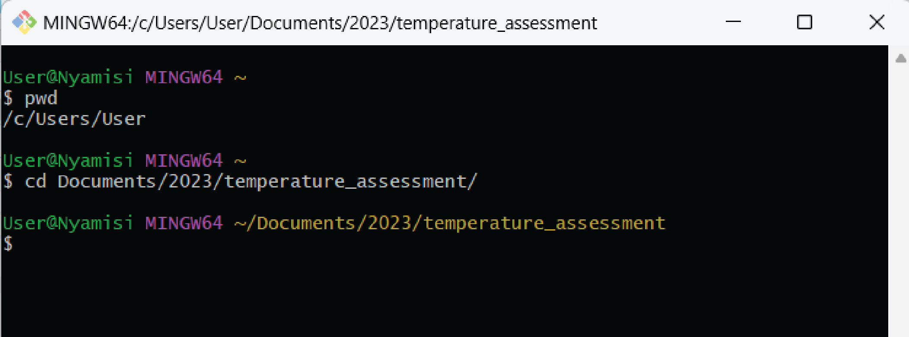
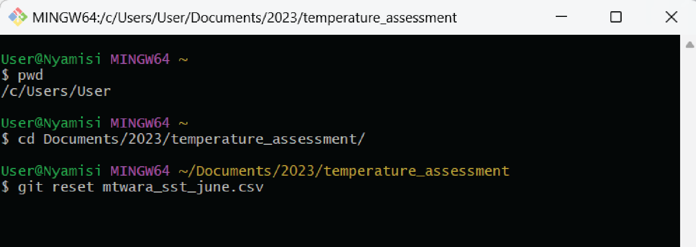
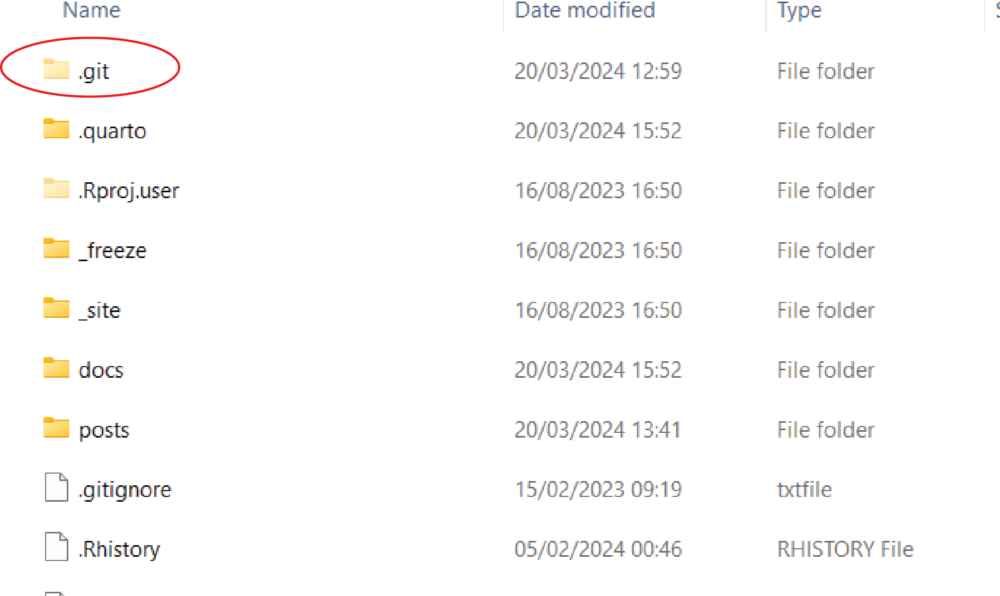
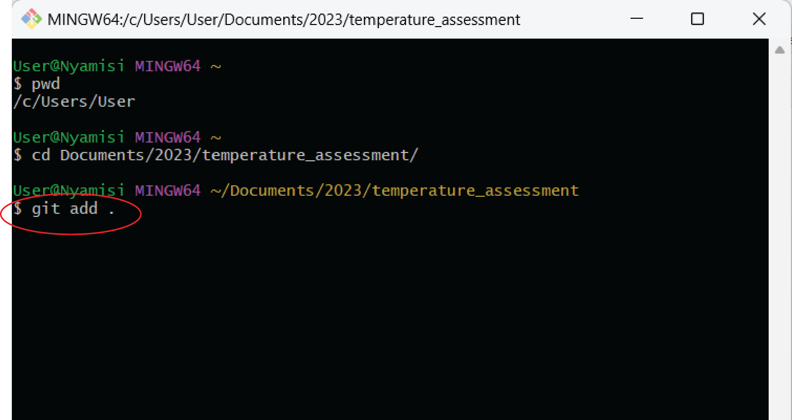
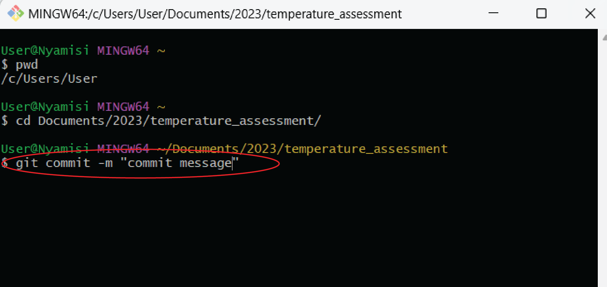
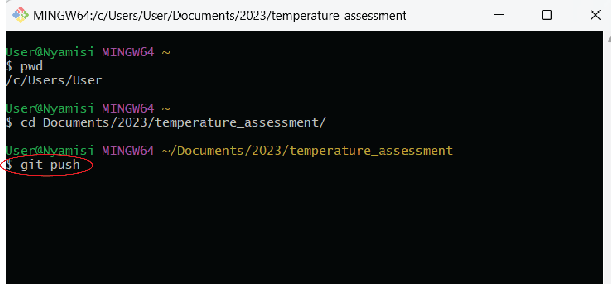
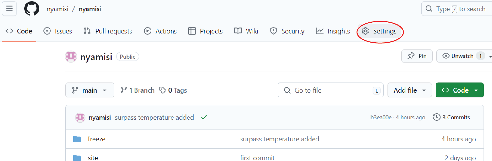
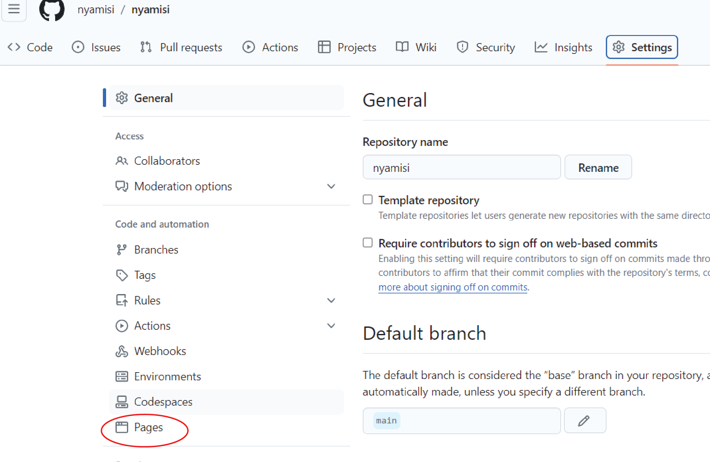
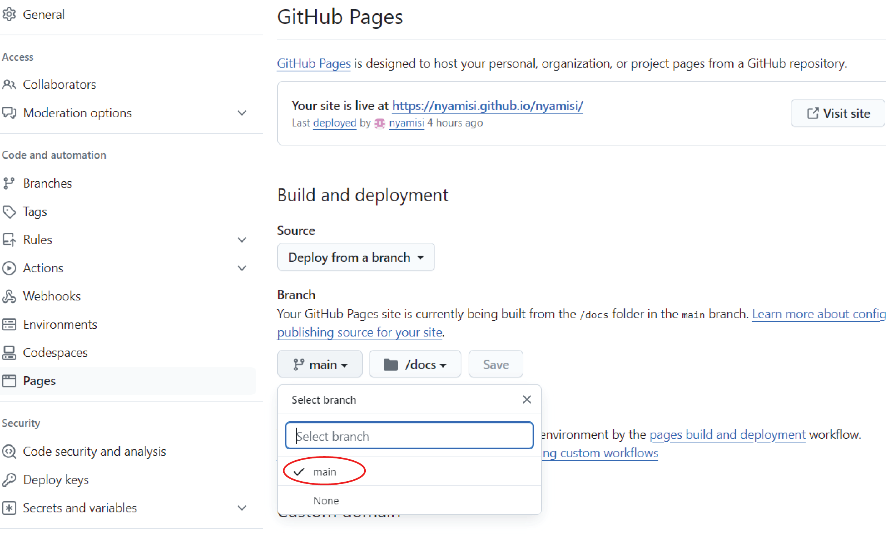
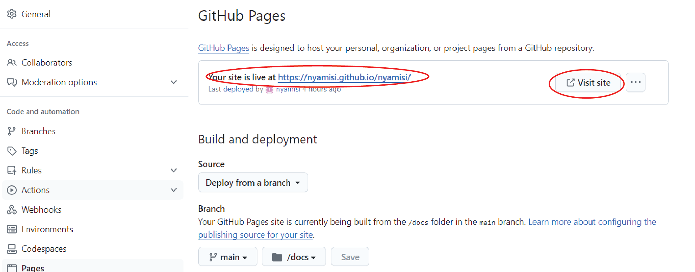

How to Remove a Large Staged File from Git
Introduction
When working with Git, it is common to accidentally stage large files that should not be included in the repository. These large files can bloat the repository and make it difficult to work with or sometimes the push fails. When the push fails, it will display an error message that shows the name of that large file in your repository. When this happens, there are steps you can take to remove these large staged files from Git.
Steps in removing a file from Git
Identify the Large Staged File: Before removing the large staged file, you need to identify which file is causing the issue, or read the error message and identify the file from your repository.
Open the Git bash and move to your working directory using
cdcommand. Unstage the File: Once you have identified the large staged file and moved to your working directory, you can unstage it using the
git reset <file>command. In this case, I will remove mtwara_sst_june.csv file from the repository.  This will remove the file from the staging area, but it will still be present in your working directory in the .git folder that was generated during commit.Remove the File from Git History: To completely remove the large staged file from Git, you will need to delete the .git folder from your working directory. 
Re-push Changes to your Repository: After removing the large staged file from Git, you will need to make changes to your repository. Since it is not your first commit, then you will only run three steps to make those changes to your GitHub repository; add, commit and push.
- Add all your files in the working directory using
git add .

- Commit changes to your repository using
git commit -m “Add commit message”

- Push your work using
git push

If it still give the same error message that there is large file, the only option you have is to delete that repository from GitHub and you may re-create a new repository using the same name but by changing the working directory.
Copy all your files except the
.gitfolder from the older folder to the new folder.Initiate Git in your local development environment by opening the GitBash and follow the deployment steps to GitHub.
After deployment, navigate to your repository on GitHub and verify that the changes have been deployed successfully.
If the changes made to your GitHub repository are successful, you may wish to publish your repository and make it accessible to the public as a web page
Creating your site as a Web page
Go to your GitHub account and navigate to your repository which you want to create a web page.
Go to settings in your repository and click it

- Under setting, select pages. This will open a page settings window

- Under dropdown arrow in the branch, select main

- Also in the branch select
/docsas your site folder
Since your publishing source is the /docs folder on the main branch, your entry file must be located in the /docs folder on a branch called main. In this folder under your working directory (/docs folder), it must contain the entry file for your site. GitHub Pages will look for an index.html, index.md, or README.md file as the entry file for your site.
Then, click save
The link for your site will be seen under GitHub Pages of your repository. Then, you may visit your site by clicking
Visit site
